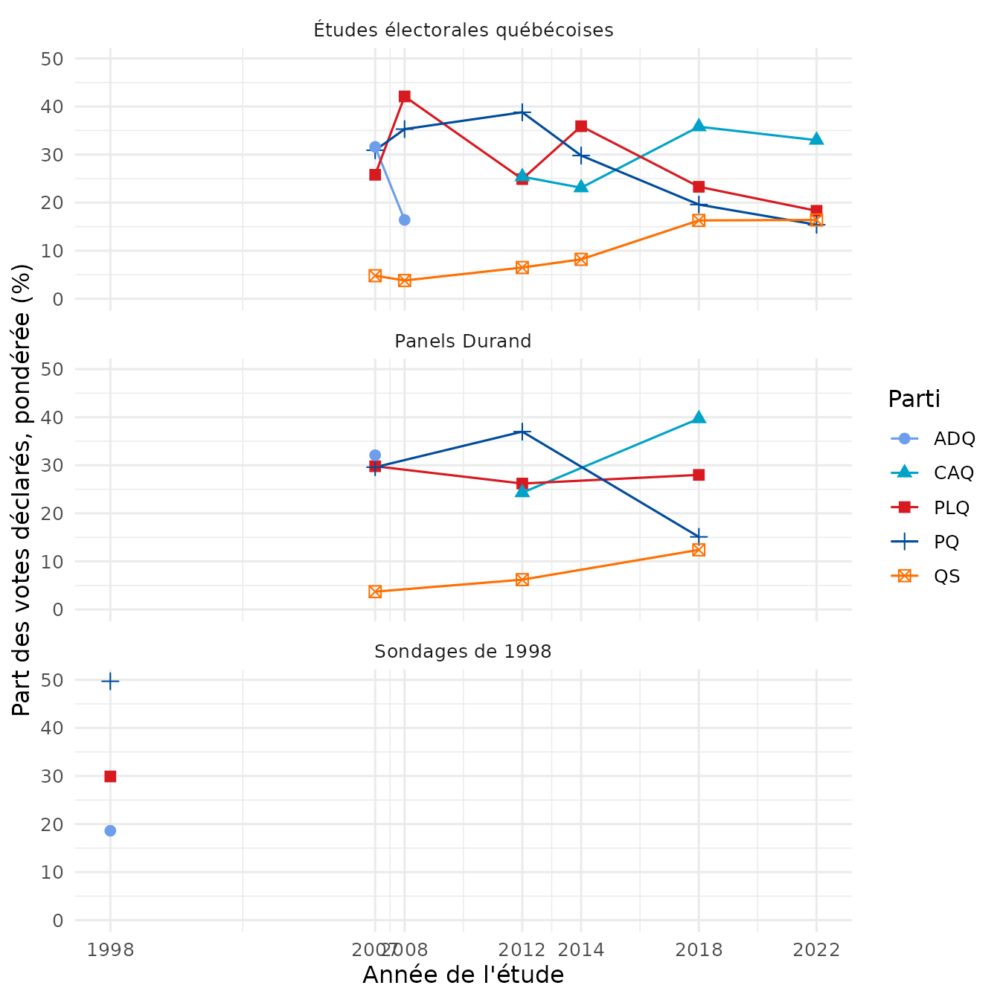

Exemple : vote déclaré
Source:vignettes/articles/fr-analyse-choix-vote.Rmd
fr-analyse-choix-vote.RmdCette page présente le vote provincial déclaré dans les études du
fichier fusionné hérité, get_qes_master(). Elle est
construite en même temps que le site : les fichiers de données sont
téléchargés de leurs dépôts Dataverse par le cache de qesR.
Pour des estimations avec le moteur d’harmonisation (expérimental), avec un niveau de comparabilité pour la question de chaque étude et la pondération de la vague qui l’a posée, voir Harmoniser entre études.
Depuis qesR 0.7.0, vote_choice est produit par le moteur
d’harmonisation : il contient le vote déclaré après l’élection dans
toutes les études qui l’ont demandé (vote_choice_timing
vaut "post"), y compris qes2022 et
qes1998, et vaut NA pour les répondants qui
n’ont pas voté, ne savent pas ou refusent de répondre. Les sondages CROP
n’ont demandé que l’intention de vote : ils ne sont pas présentés.
Chaque estimation est calculée à l’intérieur d’une étude, avec la
pondération propre à cette étude (survey_weight) ; c’est
une estimation ponctuelle qui ne tient pas compte du plan de sondage.
Les Études électorales québécoises, les panels Durand et les sondages de
1998 sont présentés séparément, car leurs devis diffèrent. Les sondages
de 1998 n’ont interrogé que des francophones, et les firmes ont
surreprésenté les indécis et ceux qui refusaient de répondre ; leur
pondération (survey_weight, telle que 0.4.4 la lisait)
n’est pas revue, de sorte que leurs parts ne sont comparables ni aux
autres études ni aux résultats officiels.
tr <- function(en, fr) if (identical(params$lang, "fr")) fr else en
master <- get_qes_master(quiet = TRUE)
studies <- qes_studies()
master$family <- studies$family[match(master$qes_code, studies$study)]
master$year <- as.integer(master$qes_year)Tableau 1 : vote déclaré par étude
Les parts sont calculées parmi les répondants qui ont déclaré avoir
voté pour un parti, « Other party » (autre parti) compris. Les
répondants qui n’ont pas voté, ne savent pas ou refusent de répondre
valent NA et sont exclus du dénominateur.
Deux sortes de cellules sont des zéros structurels, et non des estimations ; elles ne sont pas affichées comme 0 :
-
— le parti ne se présentait pas à cette élection,
selon les résultats officiels d’Élections Québec conservés dans le dépôt
source de qesR
(
inst/extdata/validation/official_results.csv; absents du paquet construit). L’ADQ s’est fusionnée à la CAQ en 2012, et Option nationale ne s’est présentée qu’en 2012 et en -
n.p. le parti se présentait, mais la question de
l’étude ne le proposait pas comme réponse : ses électeurs ne pouvaient
répondre que « Un autre parti ». Les réponses proposées par chaque
question viennent de la spécification d’harmonisation
(
qes_spec("crosswalk", targets = "vote_prov_recall")) : les études de 2012, de 2014 et de 2018 omettent le Parti conservateur (PCQ), et celles de 2018 et de 2022 le Parti vert (PVQ).
Un 0,0 est un parti proposé qu’aucun répondant de l’étude n’a déclaré.
parties <- c("PLQ", "PQ", "ADQ", "CAQ", "QS", "PVQ", "ON", "PCQ", "Other party")
# Parties with candidates at each general election: the official results of
# Elections Quebec, in the qesR source repository (not in the package build;
# the package installed from the source tree has them). A party that did
# not run cannot be reported.
official_path <- system.file("extdata", "validation", "official_results.csv",
package = "qesR")
if (!nzchar(official_path)) {
official_path <- file.path("..", "..", "inst", "extdata", "validation", "official_results.csv")
}
official <- read.csv(official_path)
ran <- split(official$party, official$election_id)
# The answers each study's question offered, from the harmonization spec
# (the levels of the reported-vote target); "other" is "Other party"
xw <- qes_spec("crosswalk", targets = "vote_prov_recall")
offered <- lapply(setNames(strsplit(xw$levels_offered, ";"), xw$study),
function(x) sub("^other$", "Other party", x))
voters <- master[master$vote_choice %in% parties & !is.na(master$survey_weight), ]
vote <- do.call(rbind, lapply(split(voters, voters$qes_code), function(d) {
w <- tapply(d$survey_weight, factor(d$vote_choice, levels = parties), sum)
w[is.na(w)] <- 0
election <- studies$election_id[match(d$qes_code[1], studies$study)]
status <- ifelse(!parties %in% c(ran[[election]], "Other party"), "not_run",
ifelse(parties %in% offered[[d$qes_code[1]]], "offered", "not_listed"))
data.frame(study = d$qes_code[1], year = d$year[1], family = d$family[1],
n = nrow(d), party = parties, pct = round(100 * as.numeric(w) / sum(w), 1),
status = status)
}))
vote$cell <- ifelse(vote$status == "not_run", "\u2014",
ifelse(vote$status == "not_listed", tr("n.l.", "n.p."),
formatC(vote$pct, format = "f", digits = 1,
decimal.mark = tr(".", ","))))
vote_wide <- reshape(vote[, c("study", "year", "family", "n", "party", "cell")],
idvar = c("study", "year", "family", "n"),
timevar = "party", direction = "wide")
names(vote_wide) <- sub("^cell\\.", "", names(vote_wide))
vote_wide <- vote_wide[order(vote_wide$family, vote_wide$year), ]
knitr::kable(
vote_wide, row.names = FALSE, align = c("l", "r", "l", rep("r", 1 + length(parties))),
col.names = c(tr(c("Study", "Year", "Family", "N voters"),
c("Étude", "Année", "Famille", "N votants")),
tr(parties, c(parties[-length(parties)], "Autre parti")))
)| Étude | Année | Famille | N votants | PLQ | PQ | ADQ | CAQ | QS | PVQ | ON | PCQ | Autre parti |
|---|---|---|---|---|---|---|---|---|---|---|---|---|
| qes2007_panel | 2007 | durand_panel | 1494 | 29,8 | 29,6 | 32,1 | — | 3,7 | 4,7 | — | — | 0,2 |
| qes2012_panel | 2012 | durand_panel | 633 | 26,2 | 37,0 | — | 24,3 | 6,2 | 3,0 | 3,0 | n.p. | 0,2 |
| qes2018_panel | 2018 | durand_panel | 704 | 28,0 | 15,1 | — | 39,7 | 12,4 | n.p. | — | n.p. | 4,7 |
| qes1998 | 1998 | polls_1998 | 1126 | 29,9 | 49,7 | 18,6 | — | — | — | — | — | 1,8 |
| qes2007 | 2007 | qes | 1727 | 25,8 | 30,9 | 31,6 | — | 4,8 | 6,4 | — | — | 0,6 |
| qes2008 | 2008 | qes | 898 | 42,1 | 35,3 | 16,4 | — | 3,8 | 2,2 | — | — | 0,3 |
| qes2012 | 2012 | qes | 1274 | 24,9 | 38,8 | — | 25,4 | 6,5 | 1,0 | 2,3 | n.p. | 1,1 |
| qes2014 | 2014 | qes | 1283 | 35,9 | 29,8 | — | 23,1 | 8,2 | 1,0 | 0,7 | n.p. | 1,3 |
| qes2018 | 2018 | qes | 2016 | 23,3 | 19,6 | — | 35,8 | 16,3 | n.p. | — | n.p. | 5,1 |
| qes2022 | 2022 | qes | 1101 | 18,3 | 15,4 | — | 33,0 | 16,4 | n.p. | — | 13,3 | 3,6 |
Figure 1 : les principaux partis
main <- vote[vote$status == "offered" & vote$party %in% c("PLQ", "PQ", "ADQ", "CAQ", "QS"), ]
families <- c(qes = tr("Quebec Election Studies", "Études électorales québécoises"),
durand_panel = tr("Durand panels", "Panels Durand"),
polls_1998 = tr("1998 polls", "Sondages de 1998"))
main$family <- factor(families[main$family], levels = families)
ggplot(main, aes(x = year, y = pct, colour = party, shape = party)) +
# a line only where a party has more than one year in the family (the
# 1998 polls have one)
geom_line(data = function(d) {
d[ave(seq_along(d$year), d$family, d$party,
FUN = function(i) length(unique(d$year[i]))) > 1, ]
}) +
geom_point(size = 2.4) +
facet_wrap(~family, ncol = 1) +
scale_colour_manual(values = c(PLQ = "#d71920", PQ = "#004c9d", ADQ = "#6d9eeb",
CAQ = "#00a3c7", QS = "#ff6f00")) +
scale_x_continuous(breaks = sort(unique(main$year))) +
scale_y_continuous(limits = c(0, NA)) +
labs(
x = tr("Year of the study", "Année de l'étude"),
y = tr("Share of reported votes, weighted (%)", "Part des votes déclarés, pondérée (%)"),
colour = tr("Party", "Parti"),
shape = tr("Party", "Parti")
) +
theme_minimal(base_size = 12)
Remarques
- Une ligne ne relie que des études de la même famille ; l’ADQ et la CAQ sont des partis distincts, et leurs lignes ne sont pas reliées.
- qesR 0.4.4 codait « Did not vote / None » et « Don’t know / Refused
» comme des catégories de
vote_choice, et prenait l’intention de vote de campagne pourqes2022etqes1998; depuis 0.7.0, ces répondants valentNAet les deux études donnent le vote déclaré (vignette("fr-migrer-0.7", package = "qesR")). - Les votes déclarés diffèrent des résultats officiels : comparez-les aux résultats publiés par Élections Québec, et non entre eux d’un devis à l’autre.